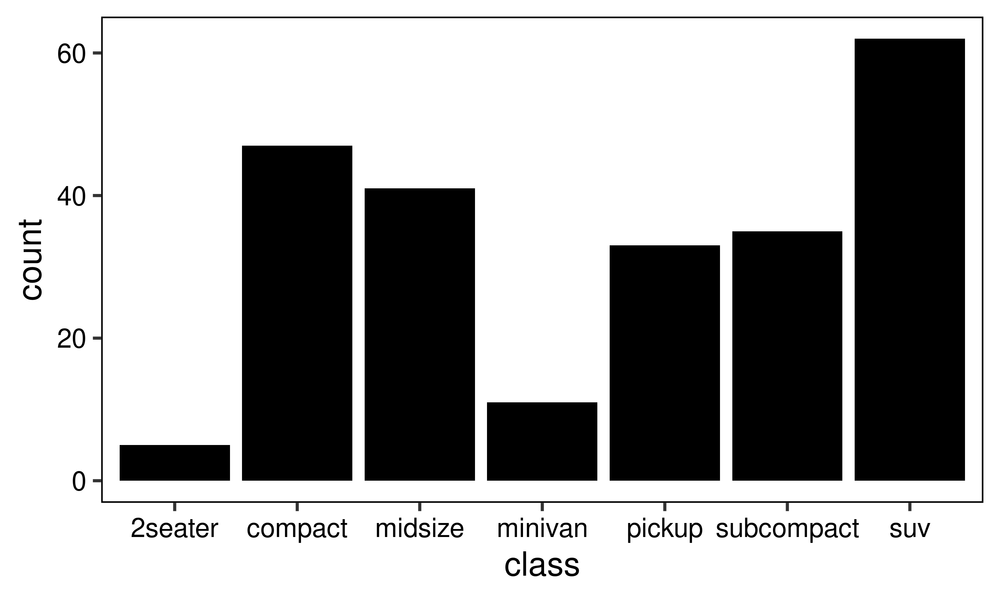
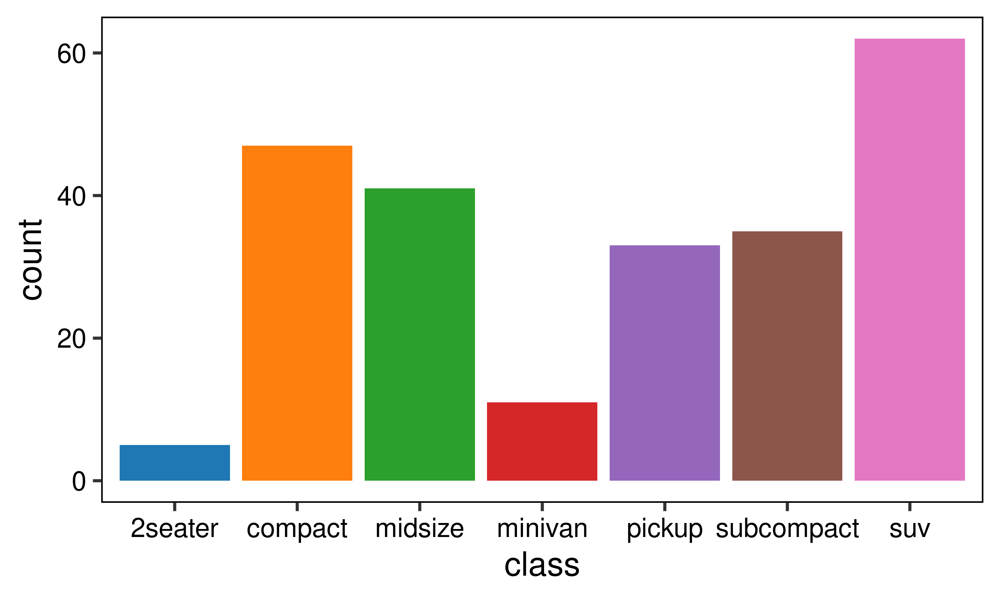
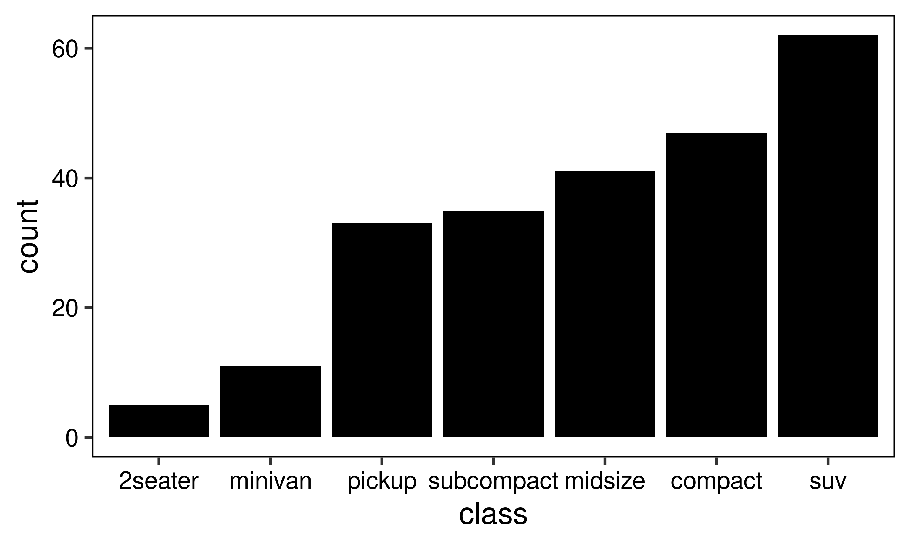
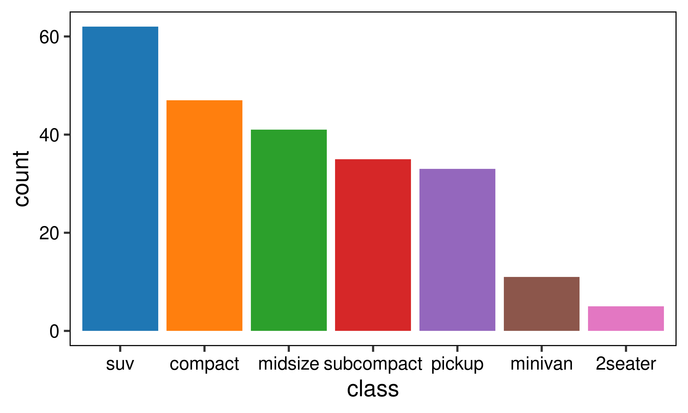

Chapter 4 ggplot
ggplot用法: 默认主题均使用theme_bw1
library(tidyverse)
library(ggplot2)
library(reshape2)
library(ggsci)
theme_bw1 <- function (base_size = 11, base_family = "", base_line_size = base_size/22, base_rect_size = base_size/22)
{
theme_grey(base_size = base_size,
base_family = base_family,
base_line_size = base_line_size, base_rect_size = base_rect_size) %+replace%
theme(panel.background = element_rect(fill = "white", colour = NA),
panel.border = element_rect(fill = NA, colour = "black"),
panel.grid = element_line(colour = "grey92"),
panel.grid.minor = element_line(size = rel(0.5)),
strip.background = element_rect(fill = "grey85", colour = "grey20"),
legend.key = element_rect(fill = "white", colour = NA), complete = TRUE,
axis.text = element_text(size = rel(0.8), colour = "black"), )
}4.1 barplot
g <- ggplot(mpg, aes(class)) +
theme_bw1(base_size = 12,base_line_size=1.5/.pt,base_rect_size=1.5/.pt) +
theme(panel.grid = element_blank())
g + geom_bar(fill="black")
g + geom_bar(aes(fill=class)) + guides(fill="none") + scale_fill_d3()
# 按照count降序排序, 直接修改mpg的class因子顺序, 图例也会跟着排序
# fct_infreq根据频率降序排序, fct_rev 反向排序.
g <- ggplot(mpg %>% mutate(class=fct_infreq(class, ordered=NA)), aes(class)) +
theme_bw1(base_size = 12,base_line_size=1.5/.pt,base_rect_size=1.5/.pt) +
theme(panel.grid = element_blank())
g + geom_bar(aes(fct_rev(class)),fill="black")
g + geom_bar(aes(fill=class)) + guides(fill="none") + scale_fill_d3()

Figure 4.1: geom_bar plot
该部分使用的R版本及包版本
## R version 3.6.3 (2020-02-29)
## Platform: x86_64-pc-linux-gnu (64-bit)
## Running under: Ubuntu 20.04.2 LTS
##
## Matrix products: default
## BLAS: /usr/lib/x86_64-linux-gnu/blas/libblas.so.3.9.0
## LAPACK: /usr/lib/x86_64-linux-gnu/lapack/liblapack.so.3.9.0
##
## locale:
## [1] LC_CTYPE=en_US.UTF-8 LC_NUMERIC=C
## [3] LC_TIME=en_US.UTF-8 LC_COLLATE=en_US.UTF-8
## [5] LC_MONETARY=en_US.UTF-8 LC_MESSAGES=en_US.UTF-8
## [7] LC_PAPER=en_US.UTF-8 LC_NAME=C
## [9] LC_ADDRESS=C LC_TELEPHONE=C
## [11] LC_MEASUREMENT=en_US.UTF-8 LC_IDENTIFICATION=C
##
## attached base packages:
## [1] stats graphics grDevices utils datasets methods base
##
## other attached packages:
## [1] ggsci_2.9 reshape2_1.4.4 forcats_0.5.2 stringr_1.4.1
## [5] dplyr_1.0.10 purrr_0.3.4 readr_2.1.2 tidyr_1.2.1
## [9] tibble_3.1.8 ggplot2_3.3.6 tidyverse_1.3.2
##
## loaded via a namespace (and not attached):
## [1] Rcpp_1.0.9 lubridate_1.8.0 assertthat_0.2.1
## [4] digest_0.6.29 utf8_1.2.2 R6_2.5.1
## [7] cellranger_1.1.0 plyr_1.8.7 backports_1.4.1
## [10] reprex_2.0.2 evaluate_0.16 highr_0.9
## [13] httr_1.4.4 pillar_1.8.1 rlang_1.1.0
## [16] googlesheets4_1.0.1 readxl_1.4.1 rstudioapi_0.14
## [19] jquerylib_0.1.4 rmarkdown_2.16 labeling_0.4.2
## [22] googledrive_2.0.0 munsell_0.5.0 broom_1.0.1
## [25] compiler_3.6.3 modelr_0.1.9 xfun_0.33
## [28] pkgconfig_2.0.3 htmltools_0.5.3 tidyselect_1.1.2
## [31] bookdown_0.30 fansi_1.0.3 crayon_1.5.1
## [34] tzdb_0.3.0 dbplyr_2.2.1 withr_2.5.0
## [37] grid_3.6.3 jsonlite_1.8.0 gtable_0.3.1
## [40] lifecycle_1.0.1 DBI_1.1.3 magrittr_2.0.3
## [43] scales_1.2.1 cli_3.4.1 stringi_1.7.8
## [46] cachem_1.0.6 farver_2.1.1 fs_1.5.2
## [49] xml2_1.3.3 bslib_0.4.0 ellipsis_0.3.2
## [52] generics_0.1.3 vctrs_0.4.1 tools_3.6.3
## [55] glue_1.6.2 hms_1.1.2 fastmap_1.1.0
## [58] yaml_2.3.5 colorspace_2.0-3 gargle_1.2.1
## [61] rvest_1.0.3 knitr_1.40 haven_2.5.1
## [64] sass_0.4.2